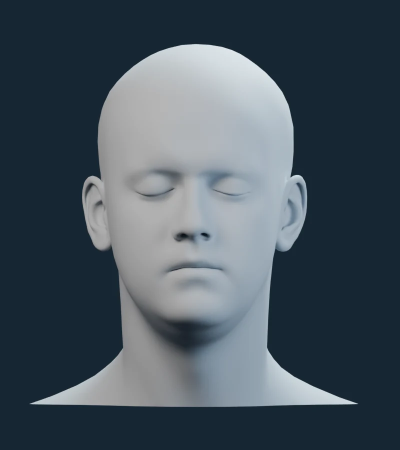
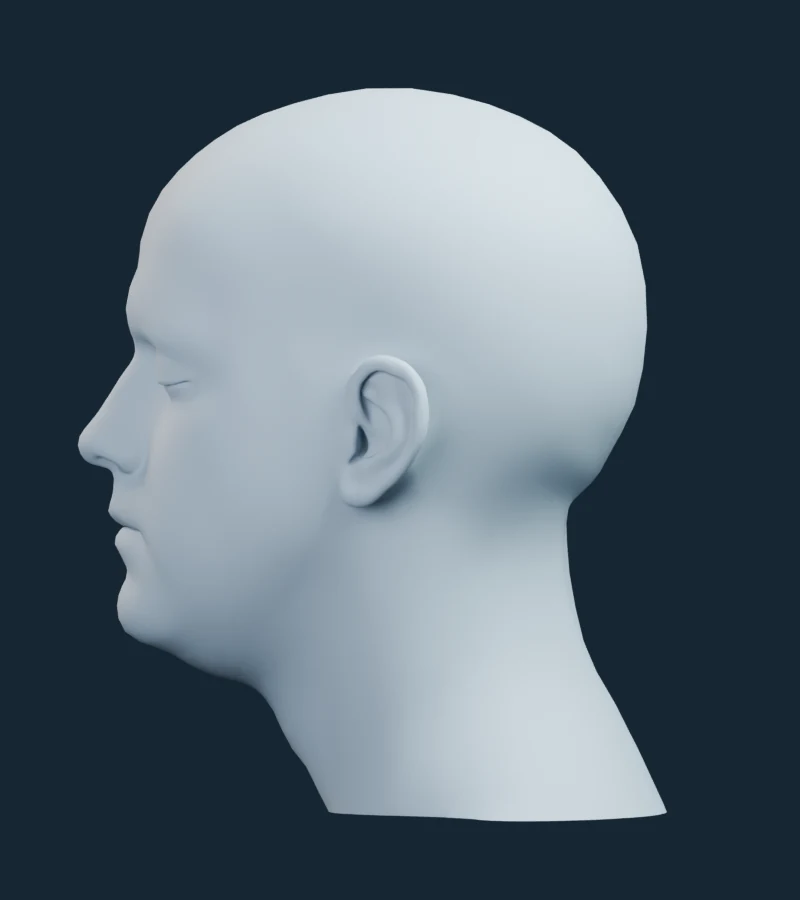

Photoreal Head · v3.1.1
Projection & Benchmark Lab
เปรียบเทียบ Texture จากกล้องจำลองมุมเดียว หลายมุม และ Robust Fusion บนรูปทรงสแกนเดียวกัน ใช้สำเนาที่กาง UV ใหม่สำหรับ Projection พร้อมตรวจ Coverage, Ambiguity และผล Holdout
กำลังโหลดโมเดลและพื้นผิว…
เปิดโมเดลไม่ได้ โปรดลองโหลดหน้าใหม่ หรือดูภาพตรวจรูปทรงด้านล่างแทน
B1 · Rendered-asset benchmark
เปรียบเทียบผล Texture Projection
สร้างภาพกล้องที่ทราบค่าจากสแกนเดียวกัน ทดสอบฉาย Texture กลับเข้า UV และจำลองสีเพี้ยนหนึ่งภาพในชุด Training โดยแยกมุม Holdout ออกจากชุดฉายภาพ
กำลังอ่านผล Benchmark ของ build นี้…
| Stress test · same holdout pixels | Color MAE ↓ |
|---|---|
| Weighted Mean · ภาพสีเพี้ยน | — |
| Robust Consensus · ภาพสีเพี้ยน | — |
| Reviewed Quarantine · ตัดภาพที่ตรวจพบ | — |
Coverage วัดเฉพาะ texels ของ skin atlas; MAE ยิ่งต่ำยิ่งดีและไม่ใช่คะแนนความสมจริง สีเทาตามรอยต่อ UV แสดงบริเวณที่ข้อมูลไม่พอสำหรับการกรอง Texture ภาพทั้งหมดเป็น unlit renders ของ Asset ที่มีอยู่ ไม่ใช่ภาพถ่ายอิสระ ไม่ได้กู้ intrinsic albedo หรือรับรอง likeness, PBR หรือ final release เมื่อ Benchmark ไม่สำเร็จ จะไม่แสดงตัวเลขหรือ Texture เก่าแทน
Baseline · ภาพจาก Blender
รูปทรงเดียวกัน หลายมุม
ภาพ clay จาก mesh จริง ปิด color และ normal map เพื่อให้เห็นปริมาตรของใบหน้า



ตัวอย่างที่ส่งมอบ
ได้อะไรจาก workflow นี้
เริ่มจากโมเดลสแกนที่มีสิทธิ์ใช้ ตรวจ clay หลายมุม ปรับวัสดุให้ส่งออกกับ glTF ได้ แล้วตรวจไฟล์และเปิดดูบนเว็บ

ขอบเขตและที่มา
ใช้ Infinite, 3D Head Scan by Lee Perry-Smith ภายใต้ CC BY 3.0 จากชุดตัวอย่าง Three.js r180 นำมาจัดวัสดุ สร้างภาพตรวจ และส่งออกสำหรับเว็บ ไม่ได้ปั้นศีรษะนี้ใหม่จาก prompt
ตัวอย่างเป็นสแกนที่หลับตา ไม่มี rig, ลูกตาแยกชิ้น หรือทรงคิ้วสลับได้ ความสูงประมาณ 0.205 เมตรเป็นการปรับสเกลเพื่อสาธิต ไม่ใช่ขนาดร่างกายที่วัดจริง ตัดส่วนไหล่ออกและเปิดขอบคอด้านล่างไว้ จึงไม่ใช่โมเดลปิดสำหรับพิมพ์ 3D และไม่มีข้อมูล landmark อิสระสำหรับรับรองสัดส่วน